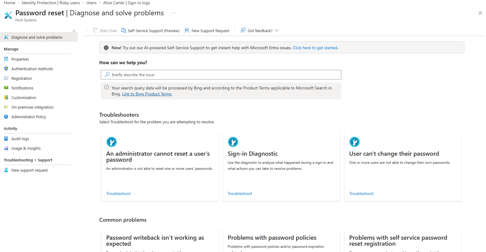
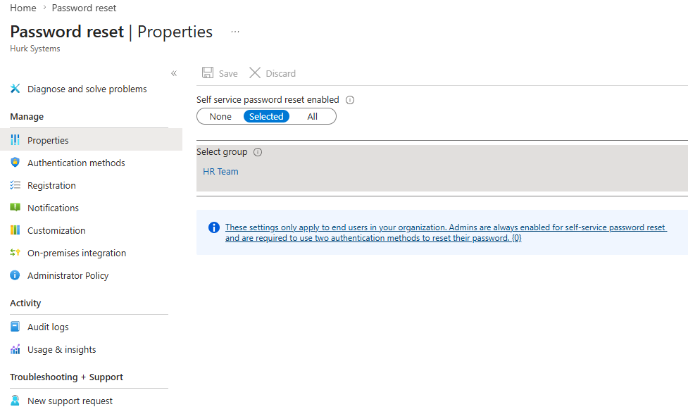
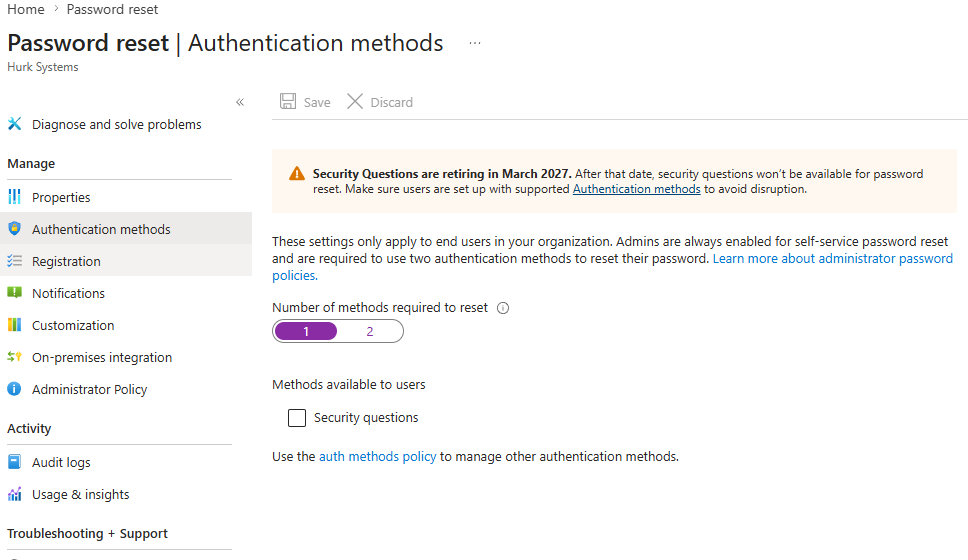
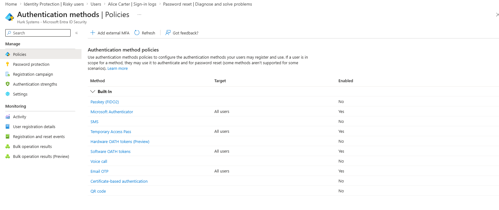
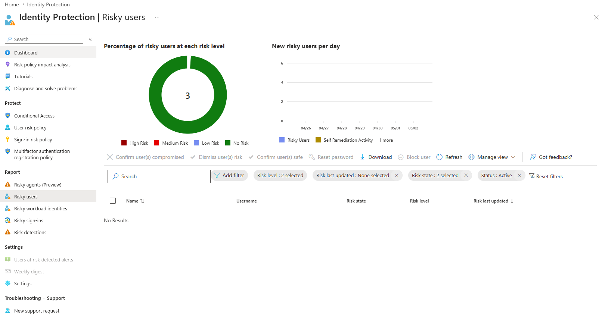
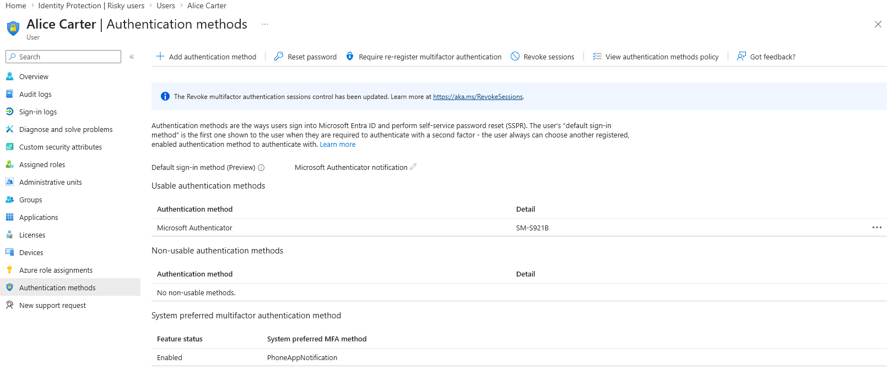
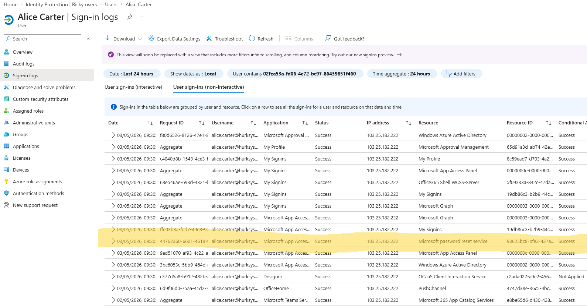

MS-102 Lab 6 - Self-Service Password Reset and Identity Protection
Published: May 03, 2026
Overview
This lab focuses on protecting user identities in Microsoft Entra ID by configuring Self-Service Password Reset and reviewing identity risk features. It builds on MFA and Conditional Access by showing how users can recover accounts securely and how risky sign-ins can be monitored.
Objective
Manage identity protection in Microsoft 365 where:
- Self-Service Password Reset is configured
- Users can reset their own passwords
- Authentication methods are used for account recovery
- Risky sign-ins and users are reviewed
Requirements
Devices / Tools
- Microsoft 365 tenant
- Admin access account
- Test user accounts Alice / Bob
- Microsoft Authenticator or phone number for testing
Tasks
Task 1 - Explore Password Reset Settings
Go to:
- Entra ID > Protection > Password reset
Review:
- Properties
- Authentication methods
- Registration
- Notifications

What is Self-Service Password Reset?
Self-Service Password Reset allows the user to reset their own password.
Where is SSPR configured?
SSPR is configured under Entra ID > Password reset.
Task 2 - Enable Self-Service Password Reset
Go to:
- Entra ID > Password reset > Properties
Set:
- Self-service password reset enabled > Selected
- Select group > HR Team

Why is it safer to enable SSPR for a group first instead of all users?
Applying SSPR to a single group allows for testing and lowers the chance of a mass user lockout.
Task 3 - Configure Authentication Methods
Go to:
- Entra ID > Protection > Password reset > Authentication methods
Configure:
- Number of methods required to reset > 1

Then go to:
- Entra ID > Authentication methods
Review available methods:
- Microsoft Authenticator
- SMS / mobile phone
- Voice call
- Temporary Access Pass

Why should users have more than one recovery method?
Users should have more than one recovery method to ensure they can still reset their password if one method is unavailable, improving reliability and security.
Which methods are available for password reset?
The available methods include Microsoft Authenticator, SMS, voice call, email, and Temporary Access Pass.
Task 4 - Register Authentication Methods
Go to:
Log in as Alice.
Register:
- Microsoft Authenticator
- Phone or email recovery method
What information does Alice need to register?
Alice needs to register authentication methods such as Microsoft Authenticator, a mobile phone number, or an email address to verify her identity.
Why is registration required before password reset can work?
Registration is required so the system has verified authentication methods to confirm the user’s identity before allowing a password reset.
Task 5 - Test Self-Service Password Reset
Go to:
Test with:
- Alice
Complete:
- Verify identity
- Reset password
- Sign in with new password
Was Alice able to reset her password?
Alice was able to reset her password.
What verification method was required?
Alice needed to enter a username or email address along with a CAPTCHA. After this step, she then had to enter a code from the Authenticator app or approve a notification in the app.
Could Alice sign in after resetting the password?
Alice could sign in after using SSPR.
Task 6 - Review Risky Users and Sign-Ins
Go to:
- Entra ID > ID Protection > Dashboard
Review:
- Risky users
- Risky sign-ins
- Risk detections

What is a risky user?
A risky user is an account where one or more risky sign-ins or risk detections have been reported.
What is a risky sign-in?
A risky sign-in is a login attempt that appears suspicious based on factors such as unusual location, unfamiliar device, or abnormal behaviour.
Why would an admin review risk events?
An admin reviews risk events to help prevent unauthorised access to the organisation.
Task 7 - Verify User Authentication Methods
Go to:
- Entra ID > Users > Alice
Check:
- Authentication methods
- Sign-in logs


Which authentication methods are registered for Alice?
Alice has sign-in activity showing use of the Microsoft password reset service.
Is there evidence of password reset or sign-in activity?
Yes. Alice has a successful non-interactive sign-in log showing activity from the Microsoft password reset service.
Knowledge Test
1. What is Self-Service Password Reset?
Self-Service Password Reset allows the user to reset their own password.
2. Why is SSPR useful for users and helpdesk teams?
SSPR reduces helpdesk workload by allowing users to reset their own passwords without administrator intervention.
3. Why should SSPR be enabled for a test group before all users?
SSPR should be enabled for a test group first to validate configuration and avoid impacting all users if issues occur.
4. What is the difference between a risky user and a risky sign-in?
A risky user is an account that is suspected to be compromised based on overall activity, while a risky sign-in is a specific login attempt that appears suspicious, such as logging in from an unusual location or device.
5. How do MFA, SSPR, and Conditional Access work together?
MFA verifies user identity during sign-in, SSPR allows users to securely reset their passwords, and Conditional Access enforces when and how users can access resources based on defined conditions.